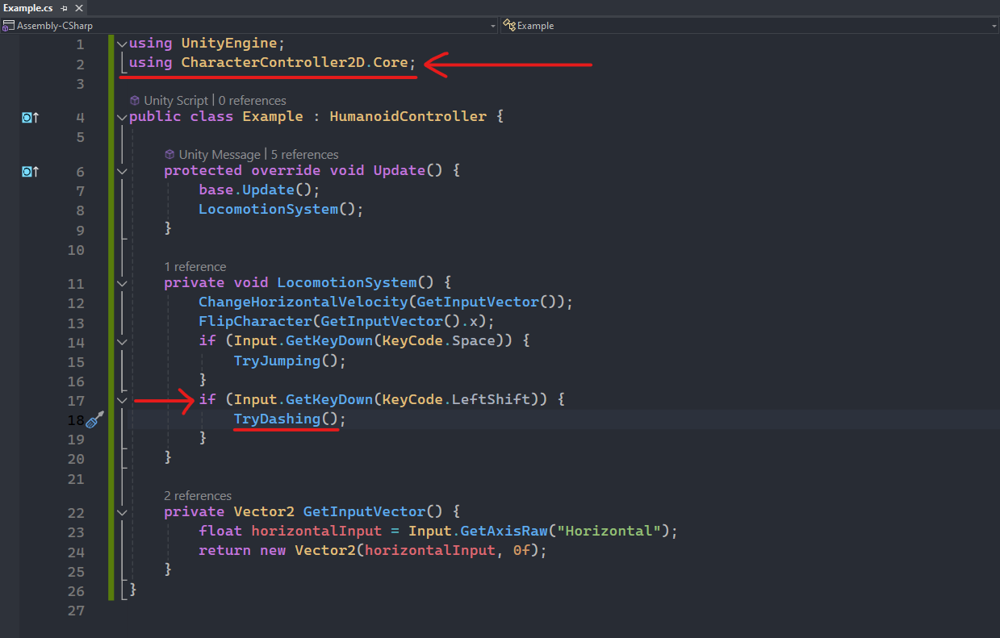
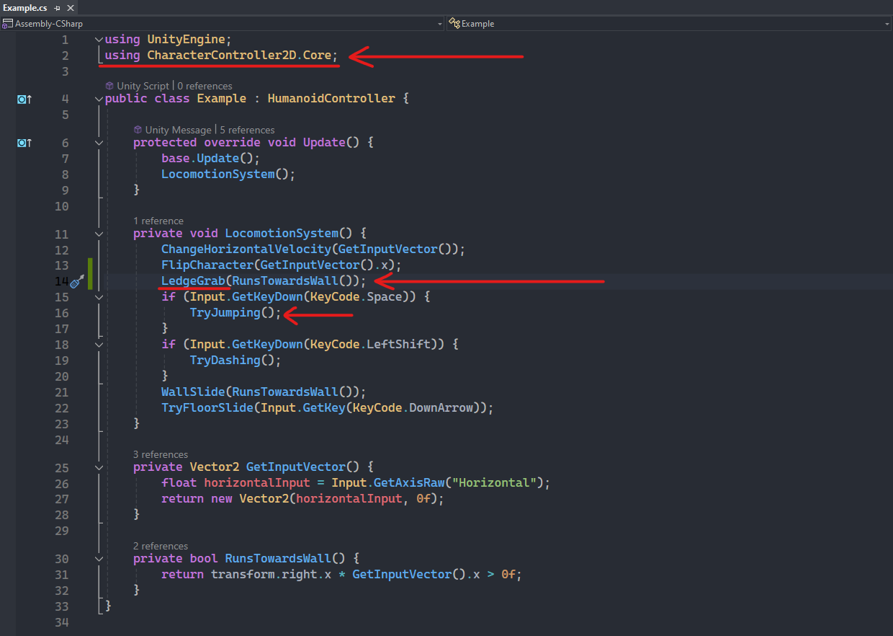

Quickly jump through sections:
- Project Settings - Anti-jitter
- Horizontal Movement
- Character Orientation
- Jump
- Dash
- Wall Slide
- Floor Slide
- Ledge Grab
- Ledge Climb
Introduction
In this section, we will explore how to implement all the locomotion mechanics provided in the asset. By the end, we will have a functional character capable of performing the following actions:
- Smooth Movement
- Jump
- Dash
- Wall / Floor Slide
- Ledge Grab / Climb
Before we proceed, let's set up our character. If you haven't completed this step yet, please visit the Character Setup section first.
Project Settings - Anti-jitter
The asset utilizes the Rigidbody2D component, but for a smoother experience, the physics simulation is coded in the Update
method instead of the FixedUpdate method. To prevent jittering when the character moves, you should change the simulation
mode of the physics engine in the Project Settings. This adjustment will ensure that the code executes smoothly.
To change the physics simulation mode follow these steps:
- Open Project Settings: Go to Edit -> Project Settings in the top menu.
- Navigate to Physics Settings: In the Project Settings window, select Physics 2D from the left-hand menu.
- Change Simulation Mode: Find the Simulation Mode setting and change it to Update to match the Update method's frame rate.
Making this change will help synchronize the physics simulation with the frame rate, ensuring smoother character movement and avoiding jittering issues.


Horizontal Movement
To implement horizontal movement for your character, simply call the ChangeHorizontalVelocity
method of the HumanoidController class and pass as the parameter the horizontal
input as a Vector2 variable.
Note: When obtaining the horizontal input from the keyboard, it is preferable to call the GetAxisRaw
method instead of GetAxis, as the latter can make the movement laggy.
Character Orientation
To make sure our character faces the right direction while moving we also need to utilize the FlipCharacter function. As a parameter we simply need to pass the horizontal input.
Jump
The locomotion system already performs the appropriate checks to determine whether the character should be allowed to perform a jump.
These checks include:
- Character is grounded.
- Character is in mid-air and has remaining air jumps.
- Character is not currently dashing.
- Coyote Time (a grace period after leaving a platform).
Therefore, we don't need to add any further checks in our custom code. To implement the jump mechanic, we simply need to call the TryJumping method when the desired key is pressed.
Dash
The implementation of the dash mechanic focuses on enhancing responsiveness rather than just executing the action.
Upon the designated key press, the game will conduct a pre-dash check for potential collisions with the character's
head or feet. If a collision is detected, the character's position is dynamically adjusted based on parameters configured
within the CharacterDash component
in the inspector.
To integrate the dash mechanic, simply call the TryDashing
method when the desired key is pressed.

Wall Slide
The wall slide mechanic can be implemented in two different ways:
-
Immediate Wall Slide:
As soon as a wall is detected and the character is not grounded, wall slide will immediately be initiated. -
Conditional Wall Slide:
The character will only be able to slide down a wall if a specific condition is met, such as a keypress from the keyboard.
For this example, we will implement a conditional wall slide. The goal is to allow the character to wall slide only if they are
running towards the wall.
Simply call the WallSlide method,
passing as the parameter your desired condition.
Note: Keep an eye on the created 'RunTowardsWall' function as it will be utilized again later on.
Floor Slide
The floor slide mechanic allows the character to slide along the ground when a specific condition is met, most commonly
a keypress. In this case, the character will slide when the Down Arrow key is held on the keyboard. Note that the method
used is GetKey and not
GetKeyDown.
An important aspect of this mechanic is that the locomotion system will continue the slide if the keypress is lifted while the character is under a collider that cannot be fit under. This prevents the character from getting stuck.
To implement this mechanic, simply call the TryFloorSlide method, passing the keyboard input as the parameter.
Ledge Grab
The ledge grab mechanic will allow your character to grab onto a ledge and can be implemented in two different ways:
-
Immediate Ledge Grab:
As soon as a ledge is detected and the character is not grounded, ledge grab will immediately be initiated. -
Conditional Ledge Grab:
The character will only be able to grab a ledge if a specific condition is met.
When implementing the ledge grab mechanic, it is crucial to ensure the correct order of method calls to prevent unintended behaviour,
such as the jump not being performed. To address this issue, the jump mechanic should be implemented after the ledge grab
method. This sequence allows for the character to smoothly transition from grabbing a ledge to executing a jump when the appropriate input is
provided.
In the example below, we will implement a conditional ledge grab. We will require the player to provide
horizontal input towards the wall in order to execute the action. To achieve this, simply call the
LedgeGrab
method and pass the RunTowardsWall function, which was previously created, as a parameter.

Ledge Climb
The ledge grab mechanic will allow your character to climb a ledge and can be also implemented in two different ways:
-
Immediate Ledge Climb:
As soon as a ledge is detected and the character is not grounded, ledge climb will immediately be initiated. -
Conditional Ledge Climb:
The character will only be able to climb a ledge if a specific condition is met.
Let's make the ledge climb mechanic conditional. In this example, when the character is grabbing a ledge, pressing the Space key on the
keyboard will initiate the ledge climb. However, since the Space key is already used by the jump mechanic, pressing Space to climb will
cause the character to jitter. This happens because the character will attempt to climb and jump simultaneously.
To resolve this issue, we need to make a minor adjustment to the implementation of the jump mechanic. Specifically, we should
check if the character is grabbing a ledge before allowing the jump mechanic to activate.
Let's implement this by simply calling the LedgeClimb
method, passing the Space-bar keypress as a parameter, and modifying the 'if' statement of the jump mechanic to also check if the
'IsLedgeGrabbing' property of the
HumanoidController is false.